Urban regeneration in the historic centre of Culiacán, with Casa Atena as a boutique hotel. Mixed-use dwellings, culture, and commerce on Calle Zaragoza and Calle Buelna, next to the river and parque La Riberas.
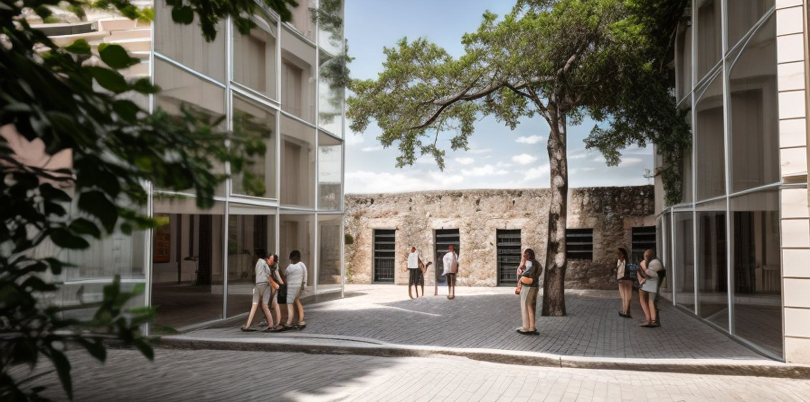
Conservando la fachada colonial en ruinas que funciona como un portal entre el pasado y el futuro.
The garden is a microclimate. Existing mature trees are kept. The project is conceived as an extension of public and private space, with river views over the tree canopy.
Parque Zaragoza sits at the epicentre of Culiacán, Sinaloa, Mexico — in the historic centre, on Calle Zaragoza and Calle Buelna, next to the river and parque La Riberas. The concept blends nature, history, and modernity: architecture starts from the existing trees and the colonial ruin facade.
Program: mixed-use — modern dwellings, culture, and commerce. Apartments of 1, 2, and 3 bedrooms. A cultural exhibition hall (Sala de Exhibiciones Culturales). Access from a boutique hotel in historic Casa Atena, a single-story house in the historic centre, restored in detail as a period-inspired hotel.
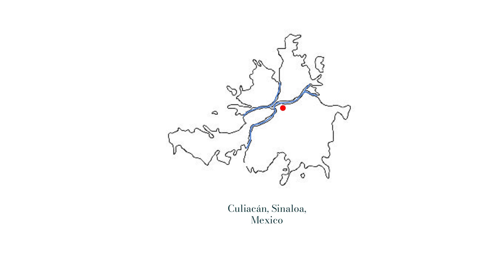
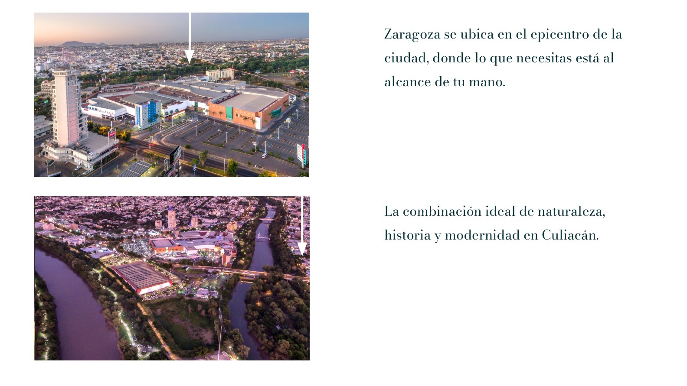
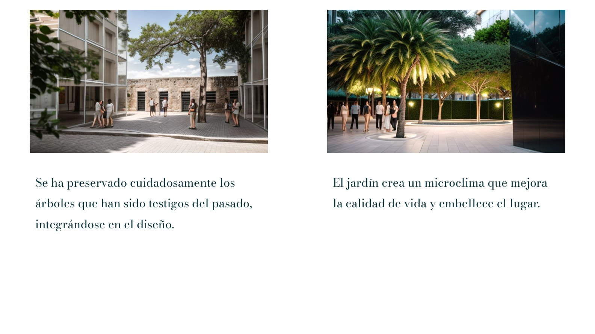
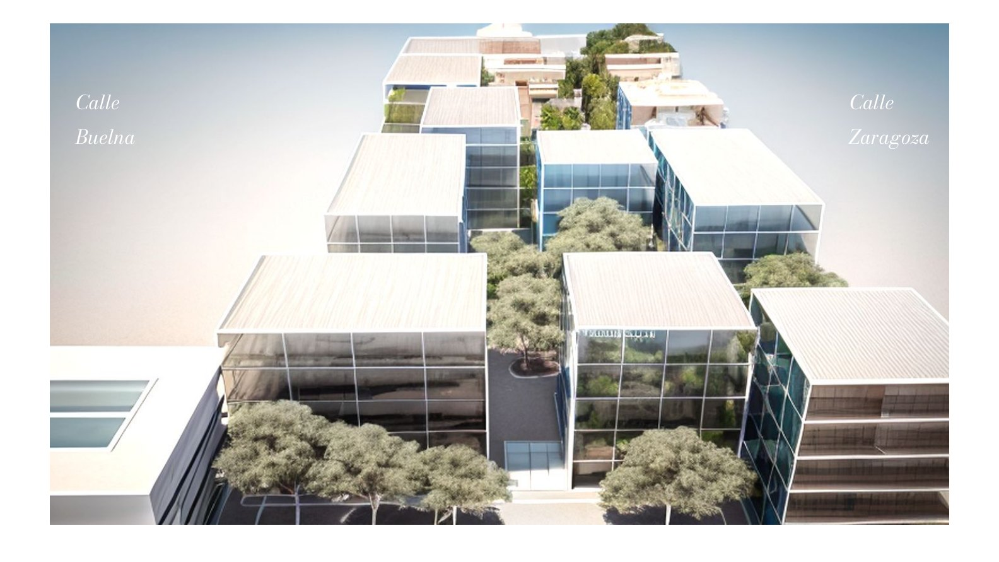
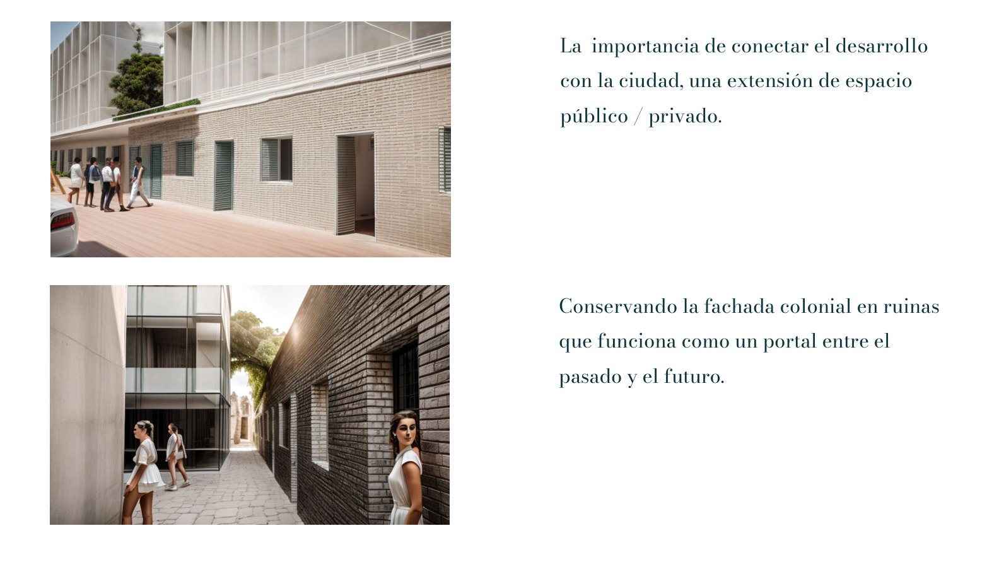
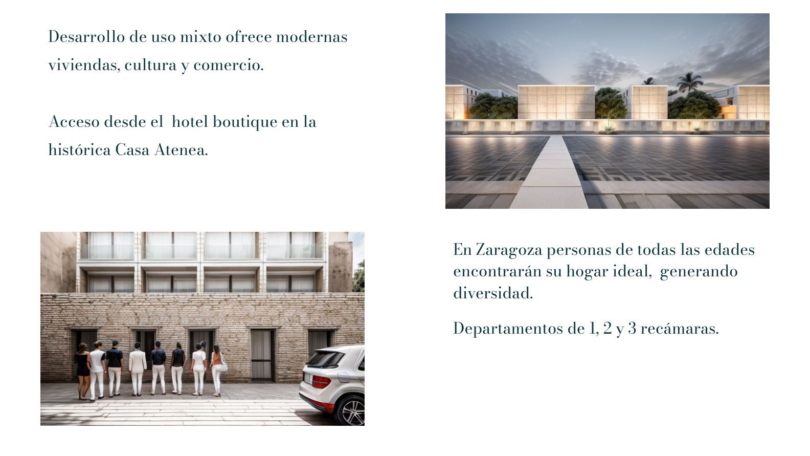
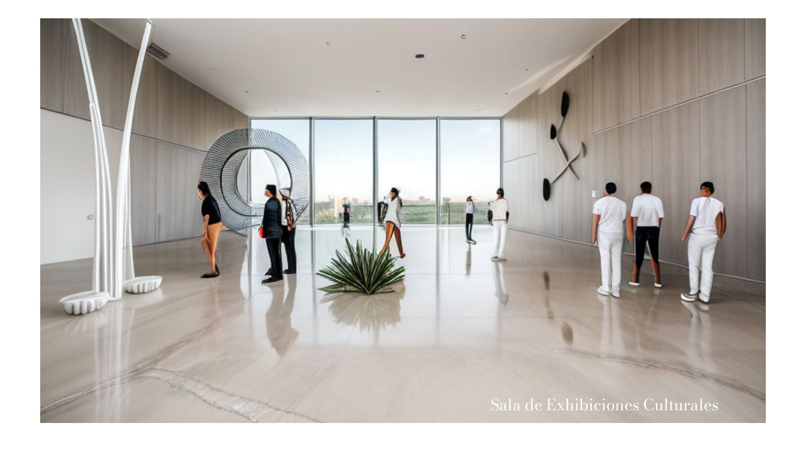
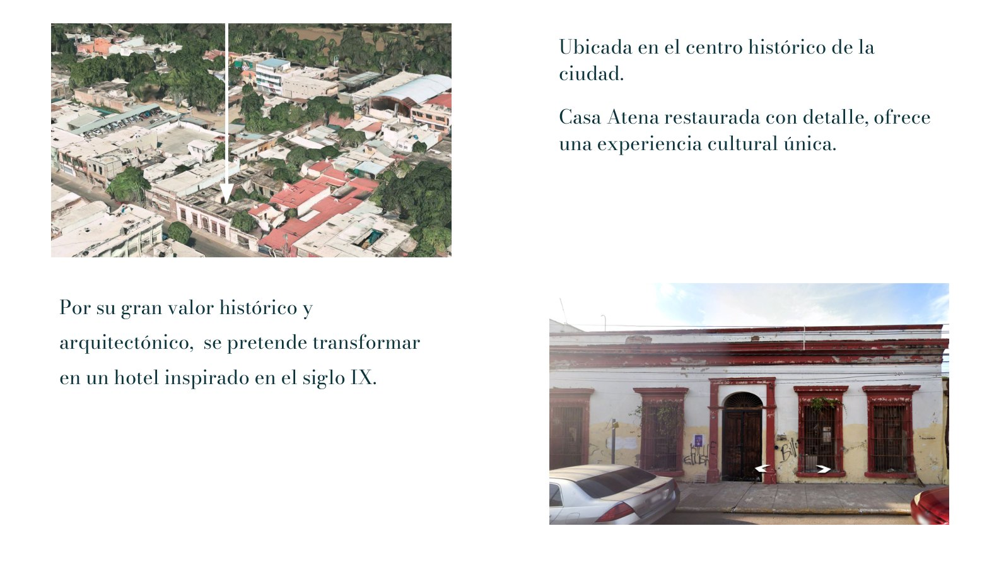
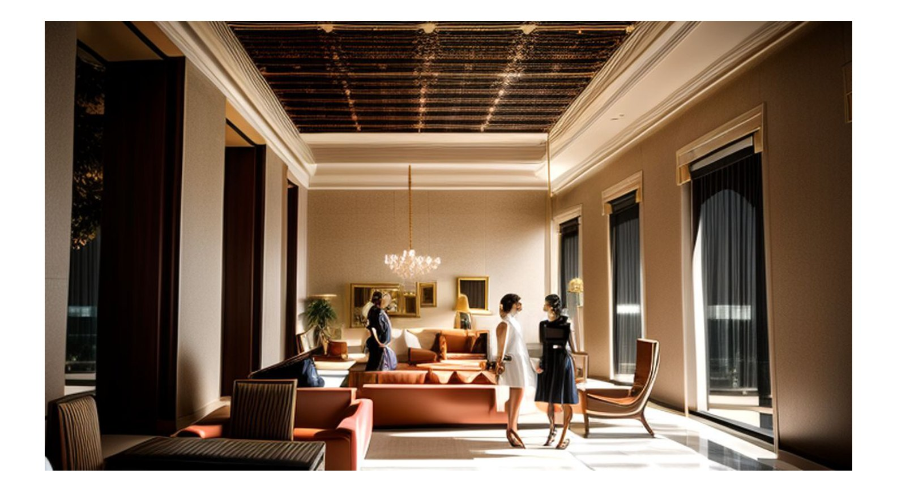
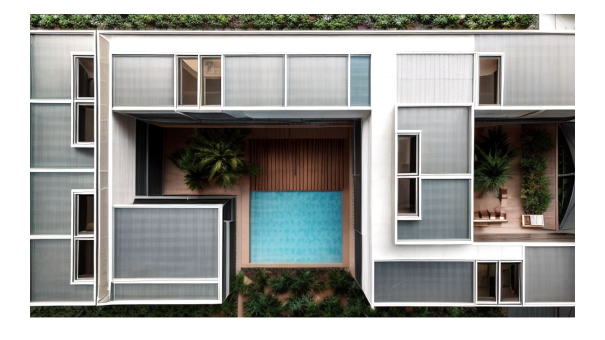